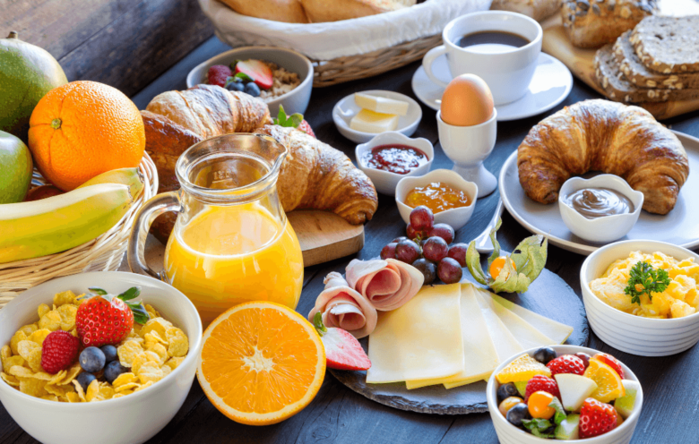
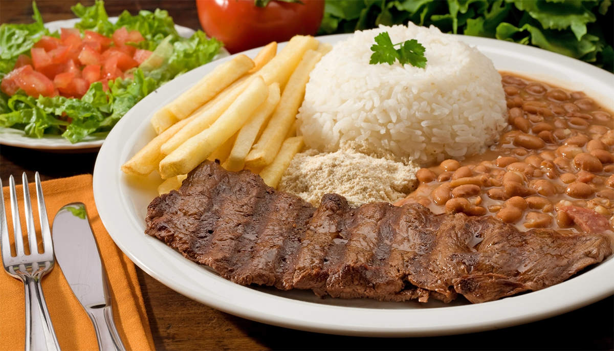
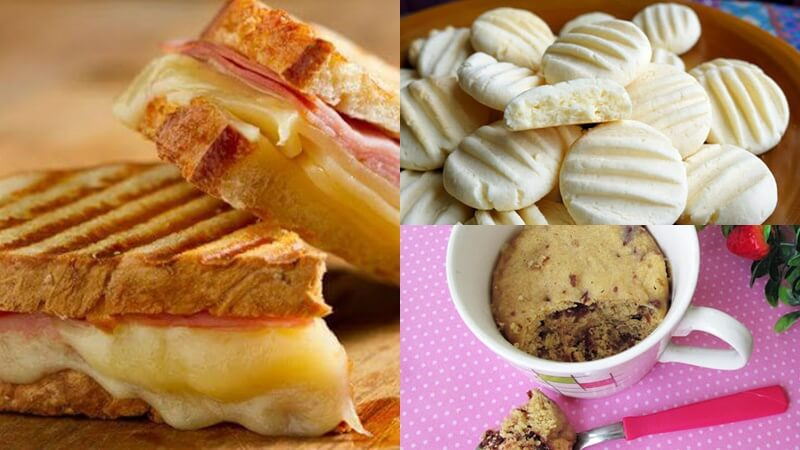

Cardápio de Férias
Férias! O que queremos é nos divertir. Este cardápio possui muitas receitas gostosas, nutritivas e divertidas. Aproveitem!
Café da Manhã

- Pão, croassant, bolo
- Suco, café, leite
- presunto, queijo, manteiga
- Frutas variadas
Almoço

- Arroz, feijão, bife
- Batata frita, farofa
- Salada de alface e tomate
Lanche da Tarde

- Misto quente
- Biscoito amanteigado
- Capuccino